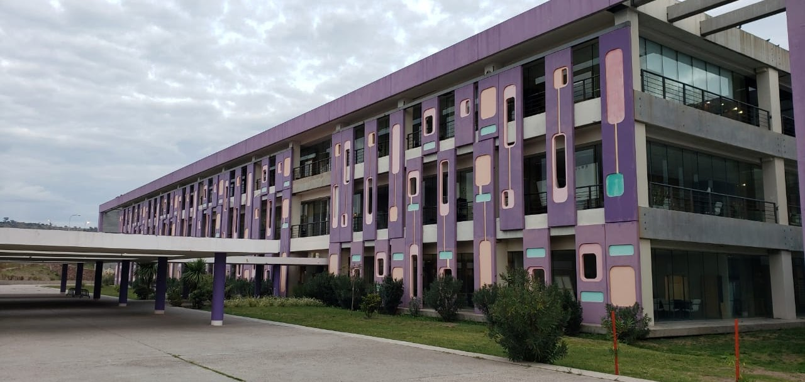

Programa Atención Primaria de la Salud Pueyrredon
Registro diario de consultas y atenciones domiciliarias
Ministerio de Salud, San Luis, Argentina. Edificio Proyección al Futuro
Nuestra Mision
La Misión del Programa Atención Primaria de la Salud es garantizar el derecho a la salud como fundamental de la persona, a través de la promoción de la Salud, prevención de enfermedades, provisión de servicios de atención y la rehabilitación. Para ello debe profundizar la gobernanza de salud, a través de la rectoría, regulación, planificación y coordinación, articulando a los actores del sistema, con VALORES tales como:
- El derecho a la salud
- Equidad social
- Solidaridad